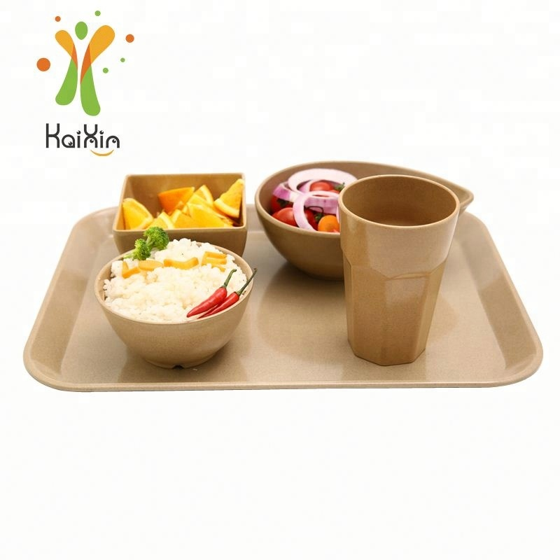
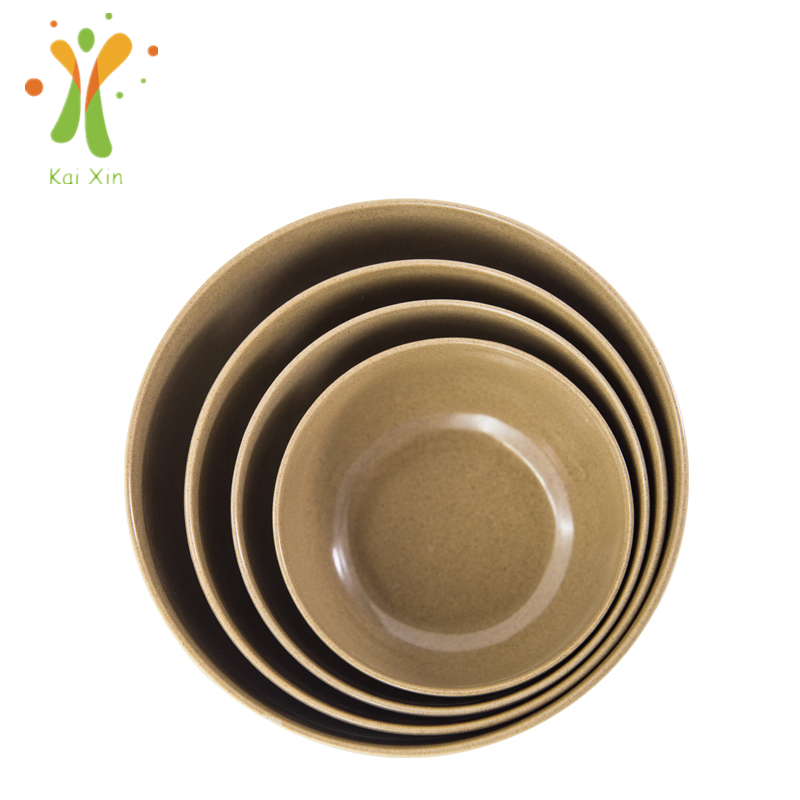

Plastic-Free Hotel Breakfast in Europe: What Changed in 2026 — and What Importers Should Stock
The European hotel breakfast is an institution — and for years it has also been one of the most single-use-intensive meals in hospitality. Jam portions, butter pods, sugar sachets, yogurt cups, plastic plates by the stack. In 2026, EU rules finally caught up with that format: the single-use plastics restrictions in force since 2021 now overlap with the new Packaging and Packaging Waste Regulation, which began applying on 12 August 2026. Here is what actually changed, what it means for HoReCa supply chains, and which reusable rice husk (plant fiber) products make sense to stock for the season ahead.

A reusable rice husk breakfast setting — tray, bowls and cup built for daily hotel service.
Two Rules, Two Timelines — What Actually Changed
It helps to separate the two pieces of legislation that hotel suppliers keep hearing about, because they hit different parts of the table. The first is the EU Single-Use Plastics Directive (Directive (EU) 2019/904). Since 3 July 2021 it has banned single-use plastic plates, cutlery, straws, stirrers and expanded polystyrene food containers from the EU market — the items most visible to guests. The second is newer and broader: the Packaging and Packaging Waste Regulation (PPWR, Regulation (EU) 2025/40), which started applying across member states on 12 August 2026. It extends restrictions from the plate to the packaging around the food — including single-use plastic packaging for food and drinks consumed on-premises in hotels, bars and restaurants, individual portion packaging for condiments, sugar and coffee creamers, and miniature toiletry bottles in hotel rooms.
There is more scheduled behind it. Under the PPWR timeline, hospitality businesses will need to let guests use their own containers from February 2027, and to offer reuse systems for takeaway food and beverages from 2028, with a further wave of format restrictions planned from 2030. The exact scope of each obligation has country-level detail, and importers should always confirm the fine print with their own compliance advisers — but the direction is unambiguous: everything disposable on the hotel breakfast table is under pressure, and the pressure is increasing year by year.
Why the Breakfast Buffet Is the Hardest-Hit Meal
A hotel breakfast concentrates more single-use material into one room than any other meal service. Consider what a typical 200-room property puts out between 6:30 and 10:30 every morning: yogurt pots, jam and honey portions, butter pods, sugar sachets, creamer cups, juice in plastic glasses, and stacks of disposable plates for guests taking food back to their rooms. Multiply that by hundreds of covers, seven days a week, and the waste bill — both the invoice and the bin — becomes one of the largest line items in food and beverage operations.
Guests have noticed as well. Sustainability has moved from the marketing brochure to the booking filter, and European travelers increasingly read a breakfast table as a signal of how seriously a property takes its own standards. For hotel groups and the distributors who supply them, that means plastic-free service is no longer only a compliance question — it is part of what the guest is paying for.
Reusable Tableware Is the Answer Regulators Reward
There are two ways to respond to a plastic ban, and they lead to very different businesses. The first is to swap one disposable material for another — molded fiber plates, compostable cups — which solves the material problem but not the volume problem. The waste keeps flowing; only its composition changes, and genuine composting infrastructure varies widely across regions. The second path is reusable tableware: durable plates, bowls, cups and trays that get washed and return to service for years. Regulators across Europe have consistently favored this second path, and the PPWR's reuse obligations make that preference explicit.
For on-premises dining — the hotel breakfast, the buffet, the restaurant — reusable is the natural fit, because the tableware never leaves the building. It is collected, washed in the property's own or an outsourced dishwasher, and stacked for the next service. There is no per-guest consumable to reorder, no packaging waste stream to manage, and no format on the banned list to replace again next year. Property operators who switch usually describe the same arithmetic: a higher one-time investment, then a service cost per cover that keeps falling the longer the tableware stays in rotation.
Why Rice Husk (Plant Fiber) Fits Hotel Service
Hotels evaluating reusable materials typically weigh ceramic, stainless steel, melamine and plant fiber composites. Ceramic chips and breaks at buffet volume; steel reads institutional; conventional melamine raises the questions buyers should always ask about composition. Rice husk tableware has a specific story that suits hospitality: it starts as the hull left over after rice milling — an agricultural byproduct that is ground and molded under heat and pressure into a dense, durable composite. No BPA, no plastic, and a warm, matte, natural finish that photographs well on a breakfast table.
Operationally it earns its place. It is light enough for housekeeping staff to clear and reset a room of tables quickly, stackable in tight back-of-house storage, resistant to the chips and cracks that end a ceramic plate's life, and stable with both hot coffee and chilled buffet items. For family hotels, the same material in a kids' tableware set solves the breakage-and-safety concern in the children's corner with one SKU. If you need the full material background, our rice husk tableware buyer's guide covers what it is made of and how it is tested.

Nested rice husk bowls — one material family, graduated sizes, tight storage footprint.
What Importers and Distributors Should Stock
A hotel breakfast program is really a small family of products, and distributors who quote it as a coordinated set win the order over single-SKU suppliers. The core list:
Plates for the main service — square rice husk plates and round plates cover the two table styles most European properties ask for.
Bowls in nesting sizes — muesli, fruit and yogurt service; nested sets like our rice husk bowls keep storage compact.
Cups for coffee service — the rice husk coffee cup handles hot drinks and iced service, and takes a molded logo well.
Trays for the buffet line and room service — serving trays in the breakfast-set format shown above.
Compartment plates — compartment plates for buffet stations, children's areas and staff canteens.
Kids' sets — the rice husk kids set for family-oriented properties.
Buying the range from one factory also keeps color, finish and material batch consistent across the table — a detail hotel chains notice when they audit a property.
Ask for Documents, Not Slogans
One more shift matters for anyone selling into the EU hospitality market in 2026: regulators are tightening what can be said about green products, not just what can be sold. Generic sustainability language without specific, verifiable backing is becoming a compliance risk in its own right. For buyers, that translates into a simple habit: ask every supplier for the actual documentation behind the claims — food-contact migration test reports for the exact SKUs being quoted, material composition details, and dishwasher-cycle performance expectations for commercial service. Our own tableware ships with food-contact reports that come SGS tested, and we encourage buyers to request the same standard from anyone they compare us with. A supplier who answers a documentation request quickly and specifically is also the supplier most likely to handle a 40-foot container order properly.
Quick Reference: The Dates That Matter
Since July 2021 — single-use plastic plates, cutlery, straws, stirrers and EPS containers banned from the EU market
Since 12 August 2026 — PPWR applies: restrictions on single-use plastic packaging for on-premises dining, individual portion packaging and hotel miniature toiletries
February 2027 — hospitality businesses must allow guests to bring their own containers
2028 — reuse systems must be offered for takeaway food and beverages
2030 — further packaging format restrictions take effect
Always confirm scope details with your own compliance adviser — implementation varies by member state.
Frequently Asked Questions
Is reusable tableware legally required for EU hotel breakfasts?
Not for the plate itself — the rules ban and restrict specific single-use plastic items and packaging formats, and they push the market toward reuse through scheduled obligations. In practice, however, a full reusable breakfast service is the only format that clears every restriction on the timeline without another transition later. Most hotel groups we speak with are switching for that reason plus the operating economics, not because a single line of law says "you must own a reusable plate."
Does rice husk tableware handle commercial dishwasher cycles?
Quality plant fiber tableware is engineered for repeated commercial dishwashing — high temperatures, detergents and multiple cycles per day. The variables worth testing are your specific dishwasher program and stack density. That is exactly why we recommend every hotel or distributor start with a sample kit and run it through one month of real service before committing to container volumes. Ask any supplier, including us, for the cycle-testing expectations in writing.
Can the tableware carry a hotel group's branding?
Yes — molded logos and Pantone color matching are standard OEM services, and branding often turns a compliance purchase into a brand asset. Guests photograph what they eat from: branded tableware reinforces a property's identity at every meal, and for distributors, offering the branding service is frequently what wins the contract against a catalog supplier.
What quantities do hotel programs typically start with?
It depends on whether the property runs a pilot or a full rollout. Pilots start from stock items in small quantities; a full rollout for a mid-size property means mixed SKUs at container scale, often with a regional warehouse buffer. Our container loading and MOQ guide walks through how to plan a mixed container so the full breakfast range arrives in one shipment.
Supplying hotels for the plastic-free breakfast shift?
Tell us your market, the properties or chains you serve, and target quantities. We'll reply with a tailored quotation for the full breakfast range, our SGS-tested food-contact reports and a sample proposal — custom logo and color options included.
Send InquiryPublished by Kaixin Eco Team · Shenyang Kaixin Technology Co., Ltd. — eco-friendly rice husk (plant fiber) dinnerware manufacturer since 2016, shipping to 40+ countries with full OEM/ODM support. Going deeper: see how US cafés are making the same switch, read our take on the European zero waste kitchen, browse the full rice husk product range, or start from the Kaixin eco tableware homepage.